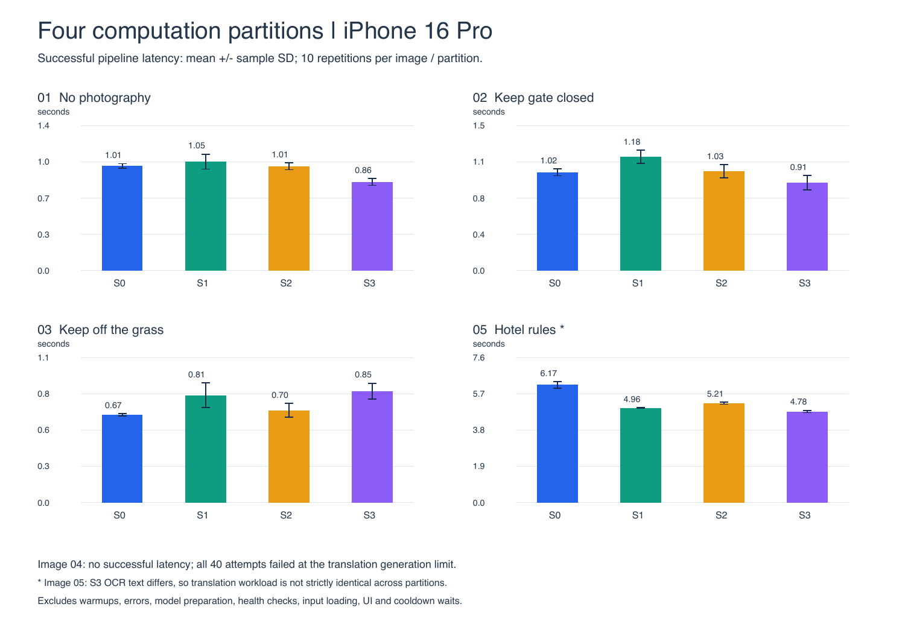

批次 formal-20261127-02。正式 200 次，预热 20 次；返回结果 160 次，错误 40 次。
成功仅表示流水线返回结果，不代表译文正确。失败与预热未计入成功耗时。图片 04 的生成上限失败保留；图片 05 的 S3 识别文本与其他方案有差异，耗时比较包含工作量差异。仅代表本设备、本局域网与这五张图片。
| 图片 | 方案 | 成功/次数 | 成功均值 ms | 成功中位数 ms | 样本标准差 ms | 成功上传 body B | 失败均值 ms |
|---|---|---|---|---|---|---|---|
| 01 | S0 | 10/10 | 1,010.1 | 1,003.9 | 22.6 | 0.0 | — |
| 01 | S1 | 10/10 | 1,052.0 | 1,059.6 | 71.6 | 2,173,522.0 | — |
| 01 | S2 | 10/10 | 1,007.7 | 1,010.2 | 32.8 | 293.0 | — |
| 01 | S3 | 10/10 | 855.8 | 856.9 | 32.3 | 224,355.0 | — |
| 02 | S0 | 10/10 | 1,017.3 | 1,020.4 | 34.9 | 0.0 | — |
| 02 | S1 | 10/10 | 1,179.7 | 1,172.0 | 67.7 | 4,478,115.0 | — |
| 02 | S2 | 10/10 | 1,028.1 | 1,010.8 | 67.8 | 248.0 | — |
| 02 | S3 | 10/10 | 908.0 | 883.0 | 75.0 | 1,251,154.0 | — |
| 03 | S0 | 10/10 | 665.4 | 666.4 | 8.6 | 0.0 | — |
| 03 | S1 | 10/10 | 814.7 | 790.7 | 92.5 | 2,690,868.0 | — |
| 03 | S2 | 10/10 | 700.2 | 684.9 | 52.9 | 211.0 | — |
| 03 | S3 | 10/10 | 845.7 | 855.4 | 60.4 | 3,228,347.0 | — |
| 04 | S0 | 0/10 | — | — | — | — | 5,610.4 |
| 04 | S1 | 0/10 | — | — | — | — | 4,062.6 |
| 04 | S2 | 0/10 | — | — | — | — | 4,156.1 |
| 04 | S3 | 0/10 | — | — | — | — | 4,057.8 |
| 05 | S0 | 10/10 | 6,170.0 | 6,113.3 | 162.6 | 0.0 | — |
| 05 | S1 | 10/10 | 4,964.1 | 4,968.0 | 22.9 | 2,385,181.0 | — |
| 05 | S2 | 10/10 | 5,210.2 | 5,203.4 | 51.4 | 1,838.0 | — |
| 05 | S3 | 10/10 | 4,775.1 | 4,775.4 | 59.9 | 1,724,481.0 | — |
01 禁止拍照；02 门禁告示；03 草坪告示；04 球场规则；05 酒店须知。
本次测量不含读图、模型准备、健康检查、日志、界面显示或轮次间隔；不含能耗测量。HTTP 请求体大小不等于链路总流量。
本次每个图片/方案组合均有 10 次正式记录。整体流水线返回率为 80%，各方案均为 40/50；这不是翻译准确率。
iPhone 16 Pro / iOS 27.2.1；App 0.3.0 build 4，Release。Mac 服务器 Apple M5、16 GiB RAM、macOS 26.6.2；单局域网、串行实验。20 次预热不计入 200 次正式记录。每次之间暂停 2 秒，不计入任务耗时。正式记录均为前台、非低电量模式，前后温度状态 nominal；手机处于充电状态，没有能耗测量。模型与解码策略保持不变。
完整批次 formal-20261127-02。此前中断批次和试跑未混入本表。动态调度、受控带宽实验、第二台手机验证仍待完成。
图中单位为秒，误差线为样本标准差，不是置信区间。各小图纵轴尺度不同。
